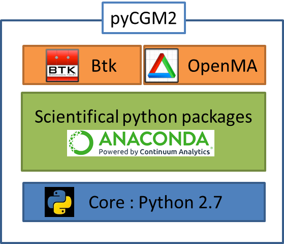

Warning
I put Instructions in the pycgm2 website. It no worth adding it in sphinx
pyCGM2 works fine on a PC following Vicon’s specifications for Nexus 2.
Warning
Notice Vicon recommands a Windows7-64-bits PC but Vicon-Nexus was compiled on a 32bits system.
Therefore, if you need Vicon compatiblity and working with python operations from Vicon-Nexus, you need to install 32-bits python packages only
pyCGM2 was designed according this diagram :
pyCGM2 was coded in python 2.7
These packages are provided by most of python suite (Anaconda, pythonxy, canopy).
Note
We recommmand the use of Anaconda2 (32bits)
In addition to common scientifical packages, pyCGM2 needs both motion analysis-dedicated packages : Openma and Btk.
Notice openMA is an evolution of Btk. Future release of pyCGM2 will be probably based on openMA only.
Note
Both pre-built packages of Btk and openMA are embedded in pyCGM2 ( folder third party). It’s no use installing one of them.
Preliminary: if you dont already have a python suite, like Anaconda : you need installing pip
Then,
Edit file : pyCGM2CONFIG.py and indicate absolute locations :
NEXUS_SDK_WIN32 = 'C:/Program Files (x86)/Vicon/Nexus2.5/SDK/Win32' NEXUS_SDK_PYTHON = 'C:/Program Files (x86)/Vicon/Nexus2.5/SDK/Python' PYTHON_NEXUS = 'C:\\Program Files (x86)\\Vicon\\Nexus2.5\\Python'
This command checks your environment and put a link in your python path ( generally Libsite-packages) toward your pyCGM2 folder.
Note
if you want to keep in touch with early development, use a versioning software and replace step 1 by :